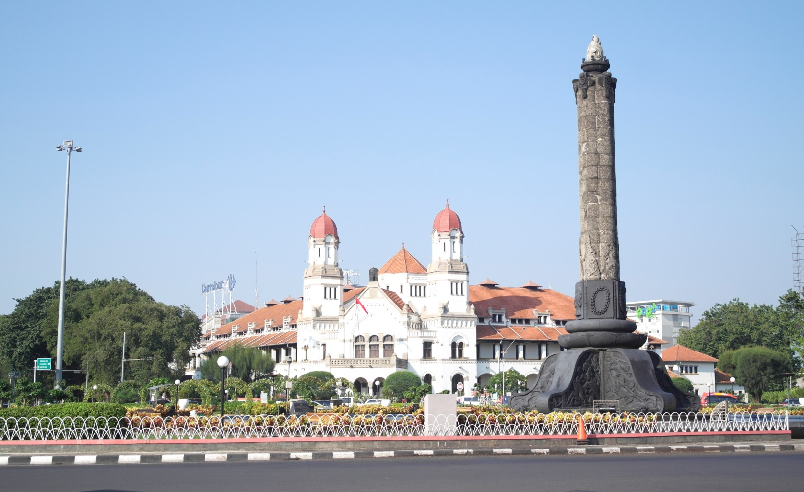

Sejarah
Sejarah Kota Semarang Jawa Tengah berawal kurang lebih pada Abad ke-8 M, yaitu daerah pesisir yang bernama
Pragota (sekarang menjadi Bergota) dan merupakan bagian dari kerajaan Mataram Kuno. Daerah tersebut pada masa itu merupakan pelabuhan dan di depannya terdapat gugusan pulau-pulau kecil.
Akibat pengendapan, yang hingga sekarang masih terus berlangsung, gugusan tersebut sekarang menyatu membentuk daratan. Bagian kota Semarang Bawah yang dikenal sekarang ini dengan demikian dahulu merupakan laut.
Pelabuhan tersebut diperkirakan berada di daerah Pasar Bulu sekarang dan memanjang masuk ke Pelabuhan Simongan, tempat armada Laksamana Cheng Ho bersandar pada tahun 1405 M.
Di tempat pendaratannya, Laksamana Cheng Ho mendirikan kelenteng dan mesjid yang sampai sekarang masih dikunjungi dan disebut Kelenteng Sam Po Kong (Gedung Batu).
Pada akhir abad ke-15 M ada seseorang ditempatkan oleh Kerajaan Demak, dikenal sebagai Pangeran Made Pandan, untuk menyebarkan agama Islam dari perbukitan Pragota.
Dari waktu ke waktu daerah itu semakin subur, dari sela-sela kesuburan itu muncullah pohon asam yang arang (bahasa Jawa: Asem Arang), sehingga memberikan gelar atau nama daerah itu menjadi Semarang.
Geografis
Letak Kabupaten Semarang secara geografis terletak pada 110°14’54,75’’ sampai dengan 110°39’3’’ Bujur Timur dan 7°3’57” sampai dengan 7°30’ Lintang Selatan. Keempat koordinat bujur dan lintang tersebut membatasi wilayah seluas 950,21 km².
Wilayahnya sebagian besar merupakan daratan tinggi dengan ketinggian rata-rata 544,21 meter diatas permukaan air laut. Kecamatan dengan ketinggian tertinggi yaitu Kecamatan Getasan, Sumowono dan Bandungan,
sedangkan Kecamatan Bancak mempunyai rata-rata ketinggian terendah.
Berdasarkan posisi geografisnya, Kabupaten Semarang memiliki batas sebagai berikut: sebelah Sebelah utara berbatasan dengan Kota Semarang,
sebelah timur berbatasan dengan Kabupaten Grobogan, Kabupaten Demak, dan Kabupaten Boyolali, sebelah selatan berbatasan dengan Kabupaten Boyolali, sebelah barat berbatasan dengan Kabupaten Kendal, Kabupaten Temanggung dan Kabupaten Magelang.
Luas wilayahnya Kabupaten Semarang seluruhnya kurang lebih 950,21km².yang terbagi dalam 19 kecamatan dan 235desa/kelurahan. Wilayah terluas adalah Kecamatan Pringapus 78,35km² (8,25 %) dan terkecil adalah Kecamatan Ambarawa 28,22 km² (2,97 %).
Monumen
Tugu Muda

Tugu Muda sebuah monumen bersejarah di Semarang yang mencerminkan semangat perjuangan para pemuda pada masa Kemerdekaan Republik Indonesia. Juga merupakan tempat wisata bersejarah di Semarang yang berupa tiang tinggi sekitar 53 meter, namun memiliki filosofis yang sangat berarti.
Tempat wisata di Semarang memang didominasi akan wisata sejarah, sebut saja Kota Lama, Klenteng Sam Poo Kong, Candi Gedong Songo, dan juga ada beberapa wisata lain yang harus kamu eksplor.Tugu Muda salah satu tempat wisata di Semarang yang enak untuk dikunjungi, terutama di pagi dan sore hari. Apalagi selepas gowes, kamu dapat bersantai sejenak sambil wisata sejarah juga.